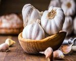
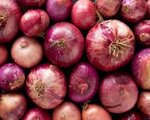

- Tomatoes
- Tomatoes are the major dietary source of the antioxidant lycopene, which has been linked to many health benefits, including reduced risk of heart disease and cancer. They are also a great source of vitamin C, potassium, folate, and vitamin K.

- Garlic
- Throughout history in the Middle East, East Asia, and Nepal, garlic has been used to treat bronchitis, hypertension (high blood pressure), TB (tuberculosis), liver disorders, rheumatism, diabetes, and fevers..
- Potato
- Potatoes are a good source of fiber, which can help you lose weight by keeping you full longer. Fiber can help prevent heart disease by keeping cholesterol and blood sugar levels in check. Potatoes are also full of antioxidants that work to prevent diseases and vitamins that help your body function properly..

- Onion
- onions provides at least 13.11% of an daily intake of vitamin C. As an antioxidant, this vitamin helps counter the formation of free radical compounds that have links to cancer.